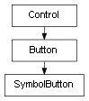

class cymel.ui.uitypes.SymbolButton¶

-
class
cymel.ui.uitypes.SymbolButton¶ ベースクラス:
cymel.ui.uitypes.Buttonmel の symbolButton ラッパークラス。
Methods:
UICMDMethods Details:
-
UICMD()¶
-
cymel.ui.uitypes.SymbolButton¶ベースクラス: cymel.ui.uitypes.Button
mel の symbolButton ラッパークラス。
Methods:
UICMD |
Methods Details:
UICMD()¶